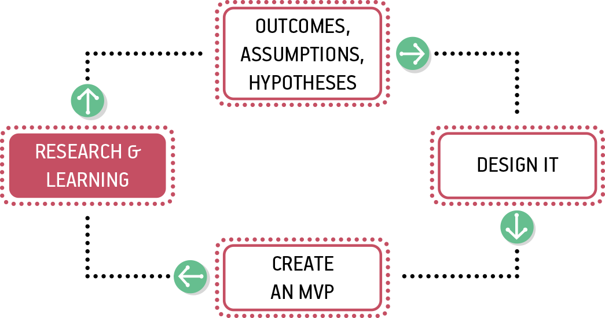
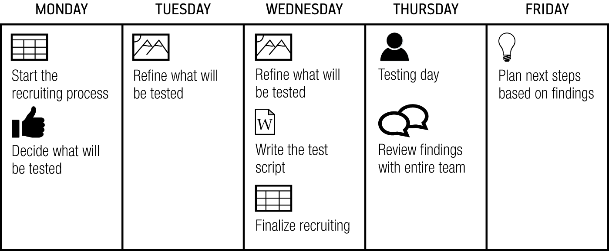
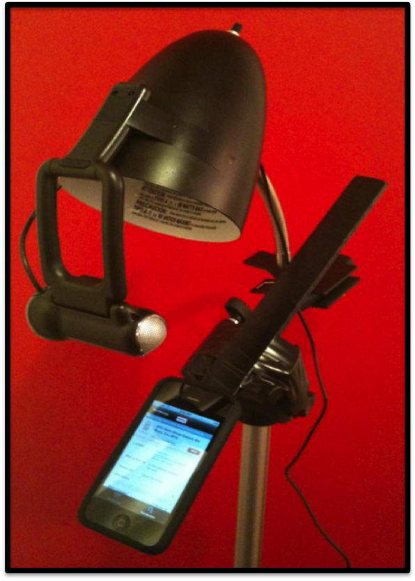
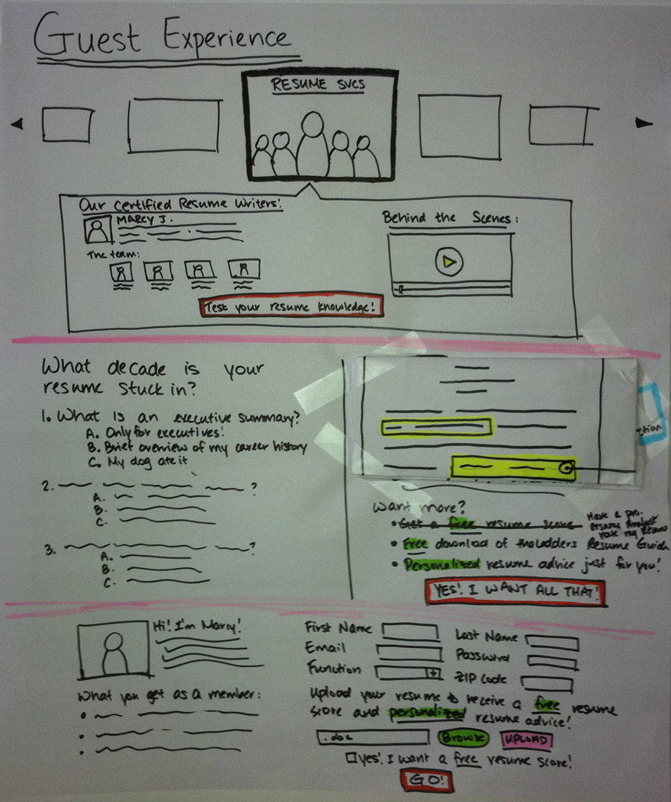
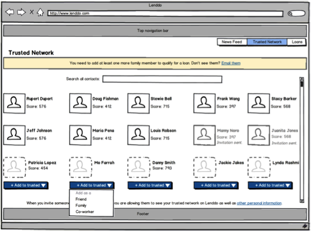
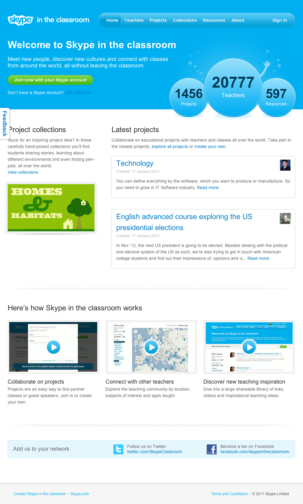
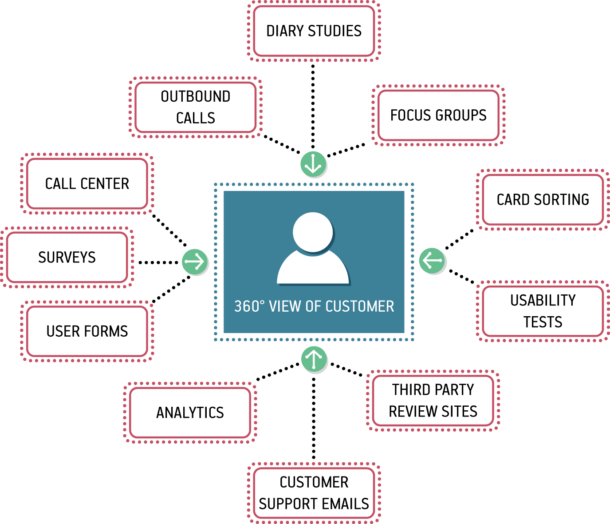

Research is formalized curiosity. It is poking and prying with a purpose.
—Zora Neale Hurston
It’s now time to put your Minimum Viable Product (MVP) to the test. All of our work up to this point has been based on assumptions; now we must begin the validation process. We use lightweight, continuous, and collaborative research techniques to do this.

Research with users is at the heart of most approaches to User Experience (UX) design. Too often though, teams outsource research work to specialized research teams. And, too often, research activities take place on rare occasions—either at the beginning of a project or at the end. Lean UX solves the problems these tactics create by making research both continuous and collaborative. Let’s dig in to see how to do that.
In this chapter, we cover the following:
Collaborative research techniques with which you can build shared understanding with your team
Continuous research techniques that you can use to build small, informal, qualitative research studies into every iteration
How to use small units of regular research to build longitudinal research studies
How to reconcile contradictory feedback from multiple sources
What artifacts to test and what results you can expect from each of these tests
How to incorporate the voice of the customer throughout the Lean UX cycle
Lean UX takes basic UX research techniques and overlays two important ideas. First, Lean UX research is continuous. This means you build research activities into every sprint. Instead of being a costly and disruptive “big bang” process, we make it bite-sized so that we can fit it into our ongoing process. Second, Lean UX research is collaborative. This means that you don’t rely on the work of specialized researchers to deliver learning to your team. Instead, research activities and responsibilities are distributed and shared across the entire team. By eliminating the handoff between researchers and team members, we increase the quality of our learning. Our goal in all of this is to create a rich shared understanding across the team.
Collaborative discovery is the process of working together as a team to test ideas in the market. It is one of the two main cross-functional techniques that create shared understanding on a Lean UX team. (Collaborative design, covered in Chapter 4, is the other.) Collaborative discovery is an approach to research that gets the entire team out of the building—literally and figuratively—to meet with and learn from customers. It gives everyone on the team a chance to see how the hypotheses are tested and, most important, multiplies the number of perspectives the team can use to gather customer insight.
It’s essential that you and your team conduct research together; that’s why we call it collaborative discovery. Outsourcing research dramatically reduces its value: it wastes time, it limits team-building, and it filters the information through deliverables, handoffs, and interpretation. Don’t do it.
Researchers sometimes feel uneasy about this approach. As trained professionals, they are right to point out that they have special knowledge that is important to the research process. We agree. That’s why you should include a researcher on your team if you can. Just don’t outsource the work to that person. Instead, use the researcher as an expert guide to help your team plan their work and lead the team through their research activities. In the same way that Lean UX encourages designers to take a more facilitative approach, Lean UX asks the same of the researcher. Use your expertise to help the team plan good research, ask good questions, and select the right methods for the job. Just don’t do all the research for them.
Collaborative discovery is simply a way to get out into the field with your team. Here’s how you do it:
As a team, review your questions, assumptions, hypotheses, and MVPs. Decide as a team what you need to learn.
Working as a team, decide who you’ll need to speak to and observe to address your learning goals.
Create an interview guide (see the sidebar “The Interview Guide”) that you can all use to guide your conversations.
Break your team into research pairs, mixing up the various roles and disciplines within each pair (i.e., try not to have designers paired with designers). If you are doing this research over a number of days, try to mix up the interview pairs each day so that people have a chance to share experiences with various team members.
Arm each pair with a version of the MVP.
Send each team out to meet with customers/users.
One team member interviews while the other takes notes.
Begin with questions, conversations, and observations.
Demonstrate the MVP later in the session, and allow the customer to interact with it.
Collect notes as the customer provides feedback.
When the lead interviewer is done, switch roles to give the note taker a chance to ask follow-up questions.
At the end of the interview, ask the customer for referrals to other people who might also provide useful feedback.
A team we worked with at PayPal set out with an Axure prototype to conduct a collaborative discovery session. The team was made up of two designers, a UX researcher, four developers, and a product manager; they split into teams of two and three. They paired each developer with a nondeveloper. Before setting out, they brainstormed what they’d like to learn from their prototype and used the outcome of that session to write brief interview guides. Their product was targeted at a broad consumer market, so they decided to just head out to the local shopping malls scattered around their office. Each pair targeted a different mall. They spent two hours in the field, stopping strangers, asking them questions, and demonstrating their prototypes. To build up their skillset, they changed roles (from lead to note taker) an hour into their research.
When they reconvened, each pair read their notes to the rest of the team. Almost immediately they began to see patterns emerge, proving some of their assumptions and disproving others. Using this new information, they adjusted the design of their prototype and headed out again later that afternoon. After a full day of field research, it was clear where their idea had legs and where it needed pruning. When they began the next sprint the following day, every member of the team was working from the same baseline of clarity, having established a shared understanding by means of collaborative discovery the day before.
A critical best practice in Lean UX is building a regular cadence of customer involvement. Regularly scheduled conversations with customers minimize the time between hypothesis creation, experiment design, and user feedback—giving you the opportunity to validate your hypotheses quickly. In general, knowing you’re never more than a few days away from customer feedback has a powerful effect on teams. It takes the pressure off of your decision making because you know that you’re never more than a few days from getting meaningful data from the market.
Although you can create a standing schedule of fieldwork based on the aforementioned techniques, it’s much easier to bring customers into the building—you just need to be a little creative to get the entire team involved.
We like to use a weekly rhythm to schedule research, as demonstrated in Figure 6-2. We call this “Three, twelve, one,” because it’s based on the following guidelines: three users; by 12 noon; once a week.

Here’s how the team’s activities break down:
Many firms have established usability labs in-house—and it used to be you needed one. These days, you don’t need a lab—all you need is a quiet place in your office and a computer with a network connection and a webcam. It used to be necessary to use specialized usability testing products to record sessions and connect remote observers. These days, you don’t even need that. We routinely run tests with remote observers using nothing more exotic than Google Hangouts.
The ability to connect remote observers is a key element. It makes it possible for you to bring the test sessions to team members and stakeholders who can’t be present. This has an enormous impact on collaboration because it spreads understanding of your customers deep into your organization. It’s hard to overstate how powerful this is.
The short answer is your entire team. Like almost every other aspect of Lean UX, usability testing should be a group activity. With the entire team watching the tests, absorbing the feedback, and reacting in real time, you’ll find the need for subsequent debriefings reduced. The team will learn first-hand where their efforts are succeeding and failing. Nothing is more humbling (and motivating) than seeing a user struggle with the software you just built.
One company that has taken the concept of “three users every Thursday” to a new level is Meetup. Based in New York City and under the guidance of Chief Strategy Officer Andres Glusman, Meetup started with a desire to test each and every one of their new features and products.
After pricing some outsourced options, they decided to keep things in-house and take an iterative approach in their search for what they called their MVP—minimal viable process. Initially, Meetup tried to test with the user, moderator, and team all in the same room. They got some decent results from this approach—the company learned a lot about the products they were testing but found the test participants could feel uncomfortable with so many folks in the room.
Over time Meetup evolved to having the testing in one room with only the moderator joining the user. The rest of the team would watch the video feed from a separate conference room or at their desks. (Meetup originally used Morae to share the video. Today they use GoToMeeting.)
Meetup doesn’t write testing scripts, because they’re not sure what will be tested each day. Instead, product managers and designers talk with the moderator before a test to identify key assumptions and key focus areas for the test. Then, the moderator and team interact with test moderators using instant messaging to help guide the conversations with users. The team debriefs immediately after the tests are complete and are able to move forward quickly.
Meetup recruited directly from the Meetup community from day one. For participants outside of their community, the team used a third-party recruiter. Ultimately though, they decided to bring this responsibility in-house, assigning the work to the dedicated researcher the company hired to handle all testing.
The team scaled up from three users once a week to testing every day except Monday. Their core objective was to minimize the time between concept and customer feedback.
Meetup’s practical minimum viable process orientation can be seen in their approach to mobile testing, as well. As their mobile usage numbers grew, Meetup didn’t want to delay testing on mobile platforms while waiting for fancy mobile testing equipment. Instead, the company built their own—for $28 (see Figure 6-3).
Over time, Meetup scaled their minimum viable usability testing process to an impressive program. The company runs approximately 400 test sessions per year at a total cost of about $30,000 (not including staffing costs). This includes 100 percent video and notes coverage for every session. This is truly amazing when you consider that this is roughly equivalent to the cost of running one major outsourced usability study.

Whether your team does fieldwork or labwork, research generates a lot of raw data. Making sense of this can be time-consuming and frustrating—so the process is often handed over to specialists who are asked to synthesize research findings. You shouldn’t do this. Instead, work as hard as you can to make sense of the data as a team.
As soon as possible after the research sessions are over—preferably the same day, if not then the following day—gather the team together for a review session. When the team has reassembled, ask everyone to read their findings to one another. One really efficient way to do this is to transcribe the notes people read out loud onto index cards or sticky notes, and then sort the notes into themes. This process of reading, grouping, and discussing gets everyone’s input out on the table and builds the shared understanding that you seek. With themes identified, you and your team can then determine the next steps for your MVP.
As you and your team collect feedback from various sources and try to synthesize your findings, you will inevitably come across situations in which your data presents you with contradictions. How do you make sense of it all? Here are a couple of ways to maintain your momentum and ensure that you’re maximizing your learning:
Typical UX research programs are structured to get a conclusive answer. Typically, you will plan to do enough research to conclusively answer a question or set of questions. Lean UX research puts a priority on being continuous—which means that you are structuring your research activities very differently. Instead of running big studies, you are seeing a small number of users every week. This means that you might discover some questions remain open over a couple of weeks. The opposite effect, though, is that interesting patterns can reveal themselves over time.
For example, over the course of regular test sessions from 2008 to 2011, the team at the TheLadders watched an interesting change in their customers’ attitudes over time. In 2008, when they first began meeting with job seekers on a regular basis, they would discuss various ways to communicate with employers. One of the options they proposed was SMS. In 2008, the audience, made up of high-income earners in their late 40s and early 50s, showed a strong disdain for SMS as a legitimate communication method. To them, it was something their kids did (and that perhaps they did with their kids), but it was certainly not a “proper” way to conduct a job search.
By 2011 though, SMS messages had taken off in the United States. As text messaging gained acceptance in business culture, audience attitudes began to soften. Week after week, as they sat with job seekers, they began to see opinions about SMS change. The team saw job seekers become far more likely to use SMS in a mid-career job search than they would have been just a few years earlier.
The team at TheLadders would never have recognized this as an audience-wide trend were it not for two things. First, they were speaking with a sample of their audience week in and week out. Additionally, though, the team took a systematic approach to investigating long-term trends. As part of their regular interaction with customers, they always asked a regular set of level-setting questions to capture the “vital signs” of the job seeker’s search—no matter what other questions, features, or products they were testing. By doing this, the team was able to establish a baseline and address bigger trends over time. The findings about SMS would not have changed the team’s understanding of their audience if they’d represented just a few anecdotal data points. But aggregated over time, these data points became part of a very powerful dataset.
When planning your research, it’s important to consider not just the urgent questions—the things you want to learn over the next few weeks. You should also consider the big questions. You still need to plan big standalone studies to get at some of these questions. But with some planning, you should be able to work a lot of long-term learning into your weekly studies.
To maintain a regular cadence of user testing, your team must adopt a “test what you got” policy. Whatever is ready on testing day is what goes in front of the users. This policy liberates your team from rushing toward testing day deadlines. Instead, you’ll find yourself taking advantage of your weekly test sessions to get insight on whatever is ready, and this will create insight for you at every stage of design and development. You must, however, set expectations properly for the type of feedback you’ll be able to generate with each type of artifact.
Feedback collected on sketches helps you validate the value of your concept (Figure 6-4). They’re great conversation prompts to support interviews, and they help to make abstract concepts concrete, which helps generate shared understanding. What you won’t get from sketches is detailed, step-by-step feedback on the process, insight about specific design elements, or even meaningful feedback on copy choices. You won’t be able to learn much (if anything) about the usability of your concept.

Showing test participants wireframes (Figure 6-5) lets you assess the information hierarchy and layout of your experience. In addition, you’ll get feedback on taxonomy, navigation, and information architecture.
You’ll receive the first trickles of workflow feedback, but at this point your test participants are focused primarily on the words on the page and the selections they’re making. Wireframes provide a good opportunity to begin testing copy choices.

Moving into high-fidelity visual-design assets, you receive much more detailed feedback. Test participants will be able to respond to branding, aesthetics, and visual hierarchy, as well as aspects of figure/ground relationships, grouping of elements, and the clarity of your calls to action. Your test participants will also (almost certainly) weigh in on the effectiveness of your color palette. (See Figure 6-6.)
Nonclickable mockups still don’t let your customers interact naturally with the design or experience the workflow of your solution. Instead of watching your users click, tap, and swipe, you need to ask them what they would expect and then validate those responses against your planned experience.

Clickable mockups, like that shown in Figure 6-6, increase the fidelity of the interaction by linking together a set of static assets into a simulation of the product experience. Visually, they can be high, medium, or even low fidelity. The value here is not so much the visual polish, but rather the ability to simulate workflow and to observe how users interact with your designs.
Designers used to have limited tool choices for creating clickable mockups, but in recent years, we’ve seen a huge proliferation of tools. Some tools are optimized for making mobile mockups, others are for the web, and still others are platform-neutral. Most have no ability to work with data, but with some (like Axure), you can create basic data-driven or conditional logic-driven simulations. Additionally, design tools such as Sketch and Adobe’s XD include “mirror” features with which you can see your design work in real time on mobile devices and link screens together to create prototypes without special prototyping tools.
Coded prototypes are useful because they have the best ability to deliver high fidelity in terms of functionality. This makes for the closest-to-real simulation that you can put in front of your users. It replicates the design, behavior, and workflow of your product. You can test with real data. You can integrate with other systems. All of this makes coded prototypes very powerful; it also makes them the most complex to produce. But because the feedback you gain is based on such a close simulation, you can treat that feedback as more authoritative than the feedback you gain from other simulations.
In the preceding discussions, we looked at ways to use qualitative research on a regular basis to evaluate your hypotheses. However, as soon as you launch your product or feature, your customers will begin giving you constant feedback—and not only on your product. They will tell you about themselves, about the market, about the competition. This insight is invaluable—and it comes in to your organization from every corner. Seek out these treasure troves of customer intelligence within your organization and harness them to drive your ongoing product design and research, as depicted in Figure 6-7.

Customer support agents talk to more customers on a daily basis than you will talk to over the course of an entire project. There are multiple ways to harness their knowledge:
Reach out to them and ask them what they’re hearing from customers about the sections of the product on which you’re working.
Hold regular monthly meetings with them to understand the trends. What do customers love this month? What do they hate?
Tap into their deep product knowledge to learn how they would solve the challenges your team is working on. Include them in design sessions and design reviews.
Incorporate your hypotheses into their call scripts—one of the cheapest ways to test your ideas is to suggest it as a fix to customers calling in with a relevant complaint.
In the mid-2000s, Jeff ran the UX team at a mid-sized tech company in Portland, Oregon. One of the ways that team prioritized the work they did was by regularly checking the pulse of the customer base. The team did this with a standing monthly meeting with customer service representatives. Each month Customer Service would provide the UX team with the top 10 things customers were complaining about. The UX team then used this information to focus their efforts and to subsequently measure the efficacy of their work. At the end of the month, the next conversation with Customer Service gave the team a clear indication of whether or not their efforts were bearing fruit. If the issue was not receding in the top-10 list, the solutions had not worked.
This approach generated an additional benefit. The Customer Service team realized there was someone listening to their insights and began proactively sharing customer feedback above and beyond the monthly meeting. The dialogue that created provided the UX team with a continuous feedback loop to inform and test product hypotheses.
Set up a feedback mechanism in your product with which customers can send you their thoughts regularly. Here are a few options:
Simple email forms
Customer support forums
Third-party community sites
You can repurpose these tools for research by doing things like the following:
Counting how many inbound emails you’re getting from a particular section of the site
Participating in online discussions and testing some of your hypotheses
Exploring community sites to discover and recruit hard-to-find types of users
These inbound customer feedback channels provide feedback from the point of view of your most active and engaged customers. Here are a few tactics for getting other points of view.
Search terms are clear indicators of what customers are seeking on your site. Search patterns indicate what they’re finding and what they’re not finding. Repeated queries with slight variations show a user’s challenge in finding certain information.
One way to use search logs for MVP validation is to launch a test page for the feature you’re planning. Following the search, logs will inform you as to whether the test content (or feature) on that page is meeting the user’s needs. If users continue to search on variations of that content, your experiment has failed.
Site usage logs and analytics packages—especially funnel analyses—show how customers are using the site, where they’re dropping off, and how they try to manipulate the product to do the things they need or expect it to do. Understanding these reports provides real-world context for the decisions the team needs to make.
In addition, use analytics tools to determine the success of experiments that have launched publicly. How has the experiment shifted usage of the product? Are your efforts achieving the outcome you defined? These tools provide an unbiased answer.
If you’re just starting to build a product, build usage analytics into it from day one. Third-party products like Kiss Metrics and MixPanel make it easy and inexpensive to implement this functionality, and provide invaluable information to support continuous learning.
A/B testing is a technique, originally developed by marketers, to gauge which of two (or more) relatively similar concepts achieve the defined goal more effectively. When applied in the Lean UX framework, A/B testing becomes a powerful tool to determine the validity of your hypotheses. Applying A/B testing is relatively straightforward after your ideas evolve into working code. Here’s how it works:
Take the proposed solution and release it to your audience. However, instead of letting every customer see it, release it only to a small subset of users.
Measure the performance of your solution for that audience. Compare it to the other group (your control cohort) and note the differences.
Did your new idea move the needle in the right direction? If it did, you’ve got a winning idea.
If not, you’ve got an audience of customers that might make good targets for further research. What did they think of the new experience? Would it make sense to reach out to them for some qualitative research?
The tools for A/B testing are widely available and can be inexpensive. There are third-party commercial tools like Optimizely. There also are open source A/B testing frameworks available for every major platform. Regardless of the tools you choose, the trick is to make sure the changes you’re making are small enough and the population you select large enough that any change in behavior can be attributed with confidence to the change you’ve made. If you change too many things, any behavioral change cannot be directly attributed to your exact hypothesis.
In this chapter, we covered many ways to validate your hypotheses. We looked at collaborative discovery and continuous learning techniques. We discussed how to build a weekly Lean testing process and covered what you should test and what to expect from those tests. We looked at ways to monitor your customer experience in a Lean UX context and we touched on the power of A/B testing.
These techniques, used in conjunction with the processes outlined in Chapter 3, Chapter 4, and Chapter 5, make up the full Lean UX process loop. Your goal is to get through this loop as often as possible, refining your thinking with each iteration.
In the next section, we move away from process and take a look at how to integrate Lean UX into your organization. We’ll cover the organizational shifts you’ll need to make to support the Lean UX approach, whether you’re a startup, large company, or a digital agency.